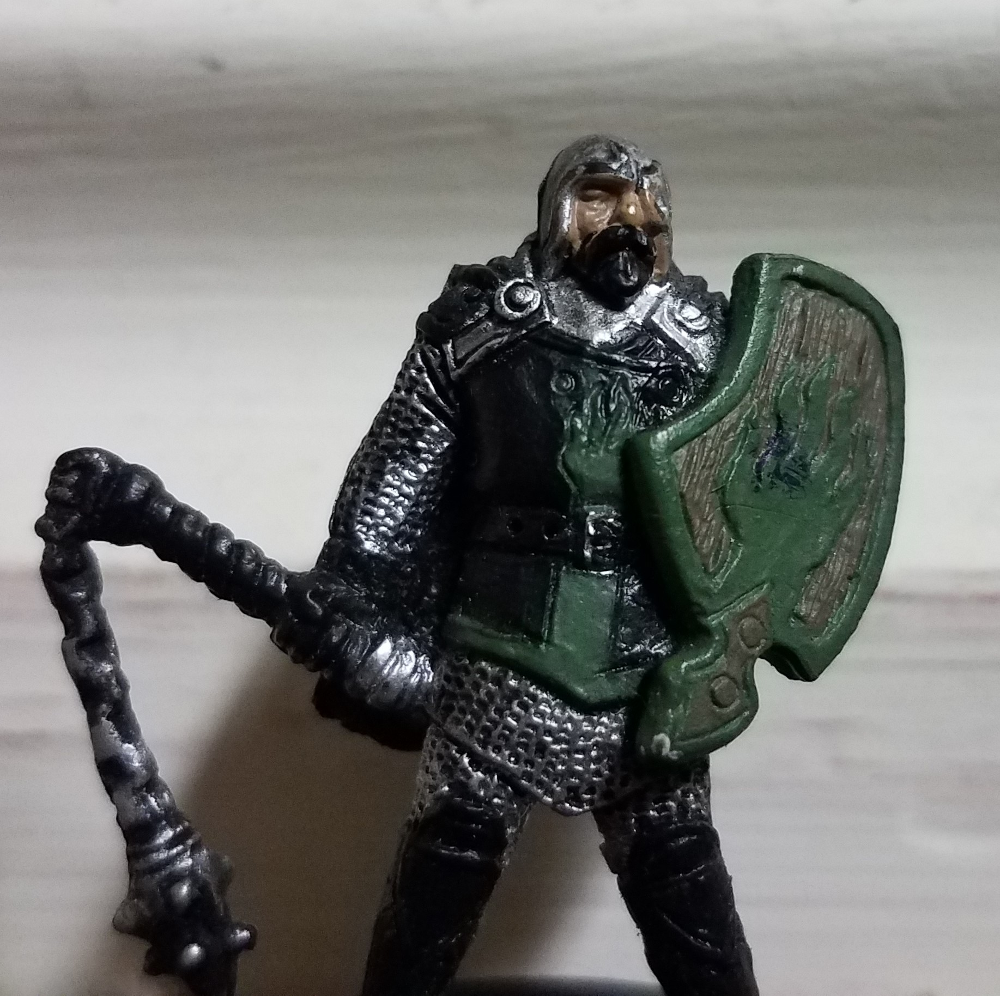

My project is to attempt to recreate the old Dark Tower board game from the 1980's. The general goal of the game is to retrieve the Ancient Magic Scepter that was stolen! It has been hidden inside the Dark Tower. The Dark Tower has 3 keys that must be retrieved before gaining access to it. These Keys are scattered between the differing Kingdoms. I will attempt to give a short explanation of the game. If you want to just find out about it's history, Click Here!
The game has many different parts to it, and can be played with up to four players. Each player has Warriors, Gold, and Rations to begin with. They must travel around the world, going from kingdom to kingdom hunting for 3 Magic Keys - Brass, Silver, and Gold. Many dangers lurk in the world, such as plagues, Brigands, getting lost, and a terrifying Dragon attack!
To give a brief description of each, let's start with Moving. Many different activities may happen when attempting to move. The first being Safe Movement, where nothing happens. You successfully make it to the square you were hoping to go to. Another possibility is is to be attacked by Brigands, where a battle will take place. We will discuss the specifics of this battle later. Travelling in the wilderness always leads to the possibility of getting lost, when this happen you move back to the square you were originally at. If one is unfortunate enough to encounter the Dragon, he will steal a quarter of your Warriors and Gold! Experiencing a Plague may also happen, killing two of your Warriors. The last occurrence, is becoming Cursed! This will only happen if another player curses you. That player will steal a quarter of your men and gold!
If you are on the Tomb or Ruins square, then you may explore it! There are three possibilities, discovering that it's deserted, encountering more Brigands, and discovering Treasure! It is here in the Tomb and Ruins that the magic Keys will be found.
Retreating to your Sanctuary or Citadel is always a good idea if you're struggling. If you have less than 5 Warriors, 7 gold, or 5 food, they will support you! Otherwise, you'll enjoy the scenery contained within the place (A turn... wasted). One piece of advice, you can't enter other Kingdoms Citadel! They are competeing with you as well! If you are preparing to storm the Tower, and have between 5 and 24 Warriors, in your own Kingdom and visit the Citadel, they will double your men!
If shopping is your preferred activity, then visiting the Bazaar is your place to be! There you can buy Warriors, Food, a Beast, a Healer, or a Scout. If you don't like the prices, then Haggle! If you succeed then you'll lower the price by 1 gold! If you fail however, the Bazaar will close for the turn!
Each Kingdom has a Frontier square that lays between the Kingdoms, outlining the borders! You must move through these squares to traverse to the next kingdom, and be able to disover the next Magic Key!
The last option is to besiege the Tower! You must move to one of the designated squares - This must be within you're own Kingdom. Besieging the Tower has two parts - solving the Magic Key Riddle! (Guessing the randomized order of the Keys) The pattern for the riddle stays the same so you if you figure out the first Key, it will stay the same. After you must slay those defending the Tower! More Brigands! If you slay them all, You Win!
There's still plenty to go through, as great as winning is. Afterall, what does a Beast do? How much gold can a Warrior carry? Let's first review these items. Each Warrior can carry 6 Gold. If you were to gain more gold than this, you lose it. If you lose enough Warriors that makes it so you have more gold than they can carry - you will also lose that gold! A beast helps solve this situation. If you own a Beast, of which you can only own one of, it makes it so you can carry an additional 50 gold!
Losing too many men to diseases? Tired of worrying about it? Want to turn the plague into a profit? The Healer is the henchman for you! Whenever you would have lost men to the Plague, you instead gain two Warriors! From where? Who knows!
 Now let's talk about fighting. Unlike the Dragon, the Brigands will skirmish with you in stages. Each round you fight with them there's a chance you might kill them, or some of your men die. Every victory you have will eradicate half of the bandits. Their victories will only remove up to half of your men, randomly decided. If you appear to be losing, then retreat! It will cost one Warriors life to do so, but you'll live. If you are playing alone, you lose if you hit 0 soldiers! If there are multiple players, than the game will force you to retreat when you have 2 soldiers - it will then take one of them as a cost of retreating... So you'll have one Warrior left - You. You'll remain in the game, but it will take time to rebuild and catch up.
Why fight? Well, for treasure of course! Everytime you kill Brigands you'll gain Gold. You also have a chance of finding a unique treasure! A Pegasus, a Dragonsword, a Wizard, or if you're in a tomb or ruin - a Magic Key!
You may only have one Pegasus with you at a time, but it allows you to travel to any rectangle in the current Kingdom you're in, including the Frontier! The Pegasus then leaves after it is used. You may hold onto it if you wish though.
The Wizard is very thankful when you find him! He will reward you by cursing one of you're fellow players - stealing a quarter of what they have in terms of Gold and Warriors! Watch out though! If someone else saves him, he may curse you!
Last pieces of information before you go charging off adventuring! Every 15 soldiers you have will consume 1 food when you move. If you have less than 5 moves left of food, you'll receive a warning of being low on food! Also, food is always 1 gold! Don't Haggle it! You can only have a max of 99 bags of Gold, 99 Food, and 99 Warriors. No three digits here! If you don't have enough money to buy, but still try to purchase it, the Bazaar will close! Losing turns is bad! Go through the Kingdoms counter clockwise! If you win, then the game will give you a score! The quicker you are, and fewer Warriors you have when you enter the Dark Tower, the higher the score!